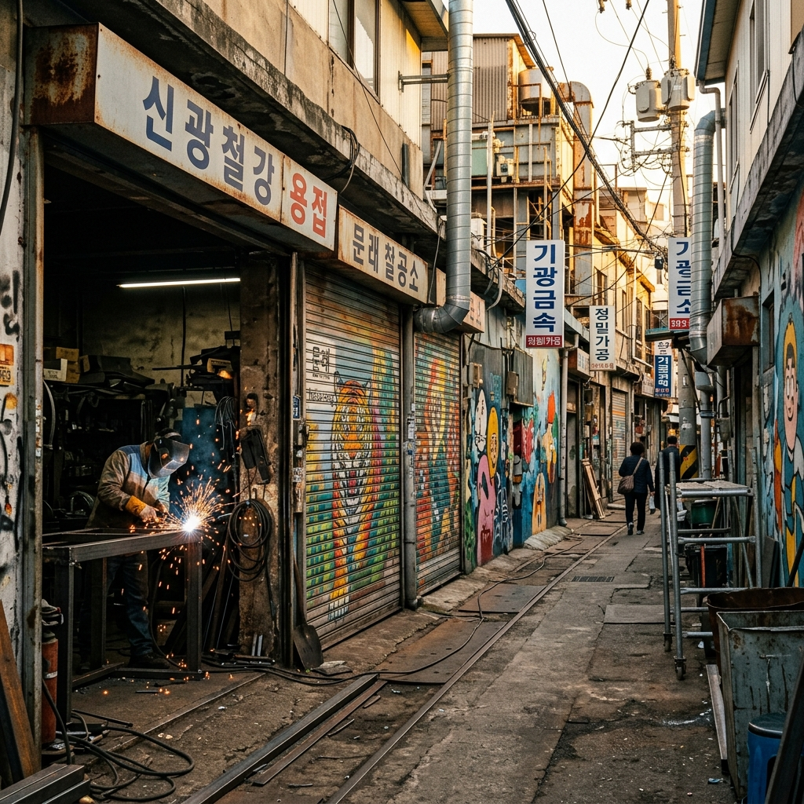
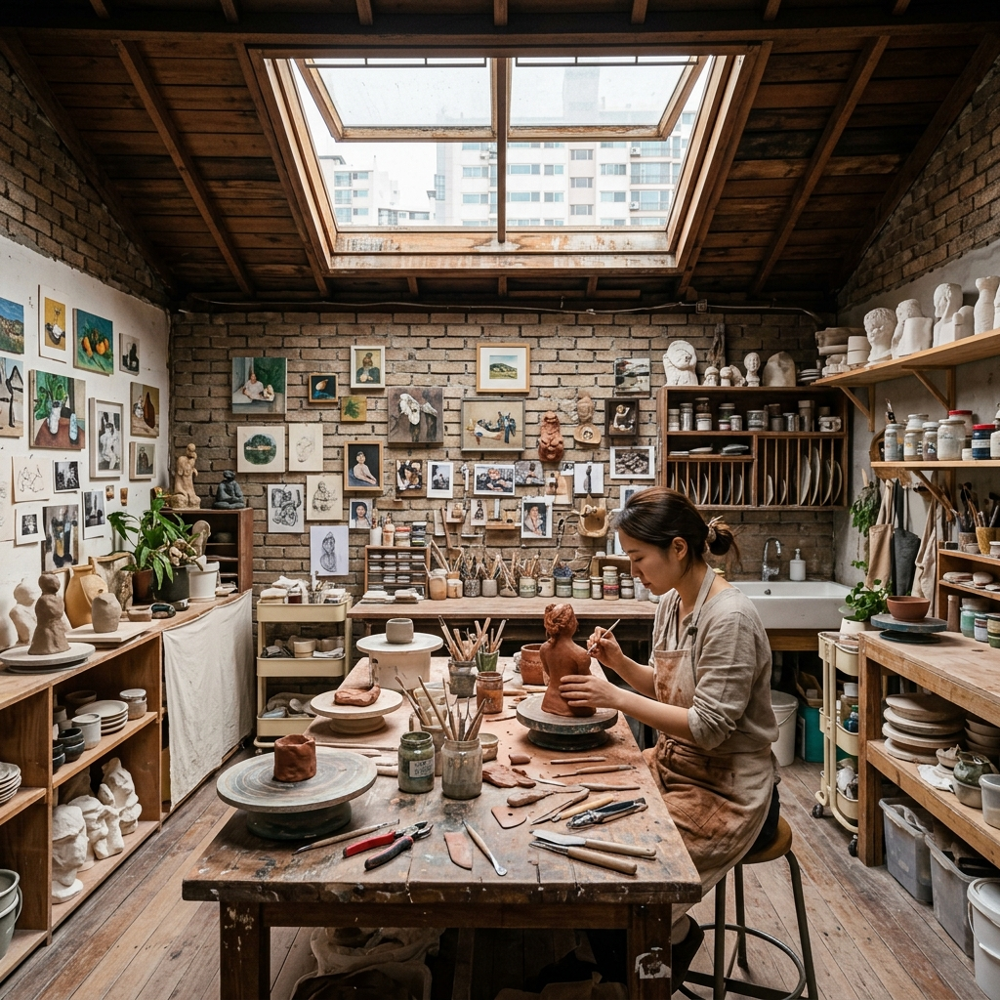
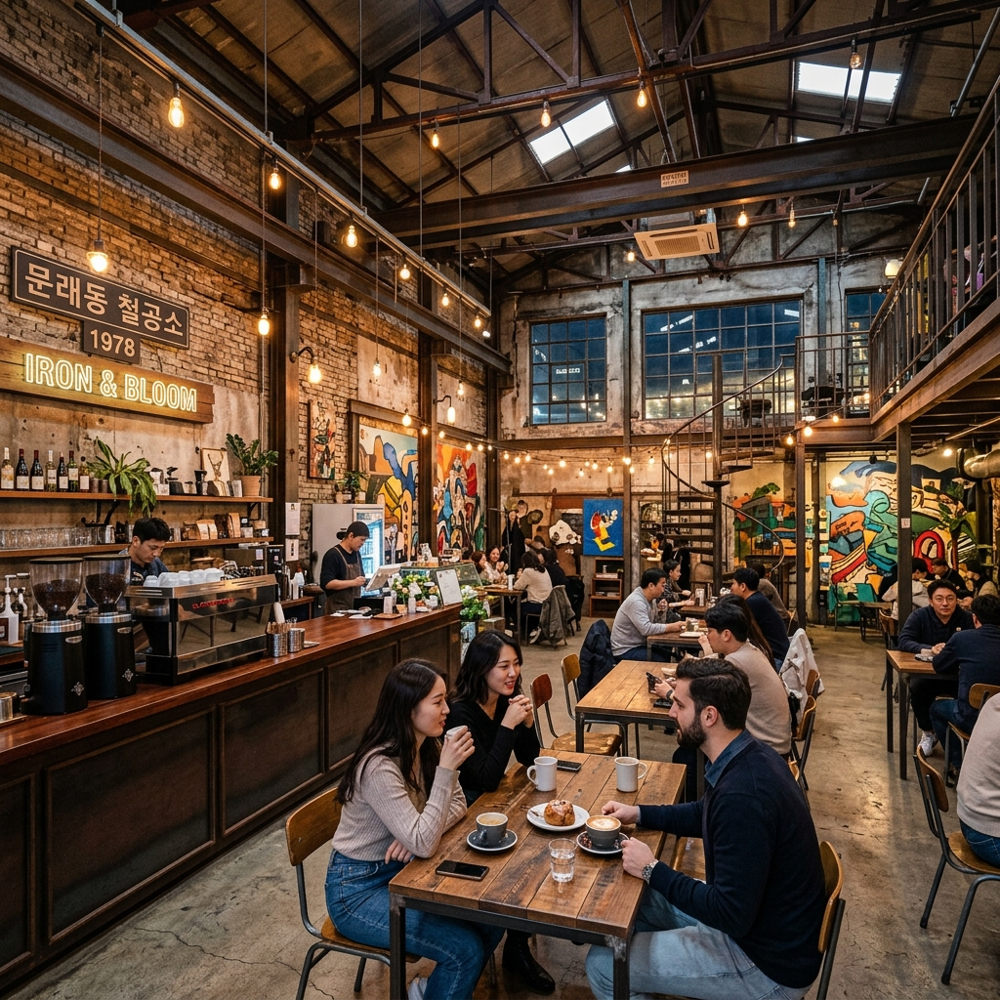

영등포구 문래동에서 뜻밖의 경험을 했습니다.
지하철 2호선 문래역에서 내려 골목으로 접어들었더니, 금속 절단기 소리와 함께 형형색색 벽화가 눈에 들어왔습니다.
문래 예술촌은 한때 국내 철강 산업의 중심지였던 문래동이 예술가들의 보금자리로 변모한 공간입니다.
직접 걸어보고 느낀 것들, 그리고 처음 방문하는 분들이 알아두면 유용한 정보들을 솔직하게 담아봤습니다.
1970~80년대 문래동은 쇳가루 날리는 공업 지역이었습니다.
수백 곳의 금속 가공 업체와 기계 부품 공장이 빽빽이 들어서며 경제 고도성장의 엔진 역할을 했습니다.
그런데 1990년대 말 경기 침체와 함께 공장들이 하나둘 문을 닫거나 외곽으로 이전하면서 빈 공간이 늘어나기 시작했습니다.
임대료가 낮아진 덕분에 넓은 작업 공간이 필요했던 예술가들이 유입되었고, 2000년대 중반부터는 아틀리에와 갤러리가 생겨나면서 지금의 모습이 형성되었습니다.
현재는 150곳 이상의 창작 공방과 여전히 가동 중인 철공소 80여 곳이 나란히 공존하는 독특한 환경이 만들어져 있습니다.

교통은 정말 편합니다.
지하철 2호선을 타고 문래역 7번 출구로 나오면 됩니다.
출구에서 직진하면 200m 남짓 걸어서 창작촌 입구에 닿습니다.
홍대입구, 신도림, 여의도 등 주요 환승지에서 모두 이어지는 노선이라 서울 어느 곳에서도 접근이 어렵지 않습니다.
자동차로 오시는 분들께는 비추천입니다.
골목이 좁고 화물 차량이 빈번히 통행하기 때문입니다. 굳이 차를 가져오신다면 인근 타임스퀘어 주차장을 이용하고 10~15분 도보로 이동하는 것이 현실적입니다.
따릉이나 개인 자전거를 이용하면 골목 사이를 더 자유롭게 탐방할 수 있습니다.
방문 목적에 따라 평일과 주말의 경험이 크게 다릅니다.
주말 방문을 추천하는 경우: 벽화와 셔터 아트가 주목적이라면 주말이 좋습니다.
철공소들이 쉬는 날이라 셔터가 내려져 있고, 그 위에 그려진 그림들을 방해 없이 천천히 감상할 수 있습니다.
갤러리와 카페도 주말에 방문객을 위해 적극적으로 문을 엽니다.
평일 방문을 추천하는 경우: 실제 작업 현장의 활기찬 모습이 보고 싶다면 평일 오전 방문이 좋습니다.
불꽃이 튀고 기계 소리가 울리는 공간에서 예술 작품을 마주치는 이 독특한 조합이 문래의 진짜 매력입니다.
다만 평일에는 통행 차량이 많고 통로가 좁으니 안전에 주의하세요.
문래동 탐방의 하이라이트는 무엇보다 셔터 아트입니다.
주말 오전, 내려진 철제 셔터 수십 개가 하나의 야외 갤러리로 변신합니다.
그중에서도 철공 장인을 사실적으로 묘사한 초대형 초상화가 SNS에서 가장 자주 등장하는 포토스팟입니다.
골목 안쪽으로 깊이 들어갈수록 조각품이 벽에 붙어 있거나, 고철 부품이 작품으로 재탄생한 모습을 볼 수 있습니다.
사진을 찍을 때는 오전 시간대가 유리합니다.
빛이 골목 사이로 부드럽게 들어오고 그늘이 적당히 있어서, 명암 대비가 자연스럽게 표현됩니다.
해 질 무렵에는 분위기 있는 조명 사진도 찍을 수 있습니다.

창작촌 안에는 화가, 조각가, 도예가, 사진작가 등 다양한 분야의 작가들이 공간을 운영하고 있습니다.
일부 공방은 방문자에게 내부를 공개하고, 몇 곳은 작품 판매도 병행합니다.
한국문화예술위원회가 운영하는 문래예술공장은 공연과 전시가 정기적으로 열리는 공간으로, 무료 관람이 가능한 행사도 많습니다.
방문 전에 문래예술공장 공식 SNS나 홈페이지에서 행사 일정을 확인해 두면 더 풍성한 방문이 됩니다.
일부 공방은 원데이 클래스를 운영하므로, 미리 신청해 두면 작가와 직접 소통하는 체험도 가능합니다.
골목 탐방 중 잠시 쉬어가기에 안성맞춤인 카페들이 있습니다.
대부분 낡은 공장이나 창고를 개조한 인더스트리얼 스타일입니다.
높은 천장, 노출 배관, 빈티지 조명이 어우러져 일반 카페와는 분위기가 확연히 다릅니다.
음료 가격은 아메리카노 기준 4,000~6,000원 수준으로 특별히 비싸지 않습니다.
점심이나 저녁은 문래역 주변 영등포 먹거리 골목에서 다양하게 해결할 수 있습니다.
분식, 돼지고기 식당, 다국적 요리 등 선택지가 풍부하고 가격도 부담 없습니다.
문래 예술촌만 보기에 아쉽다면 인근 명소와 묶어 하루 일정을 짜보세요.
타임스퀘어는 문래역에서 걸어서 약 10분 거리입니다.
영화관, 서점, 레스토랑이 한데 모여 있어 탐방 후 저녁까지 이어가기에 편리합니다.
영등포 전통시장은 타임스퀘어 바로 옆에 있습니다.
시장 분위기와 저렴한 먹거리를 즐기고 싶다면 꼭 들러보세요.
여름철에는 문래 예술촌에서 여의도한강공원까지 자전거로 15분이면 이동할 수 있어, 저녁 노을을 한강변에서 마무리하는 코스도 인기 있습니다.
문래 예술촌은 여전히 실제 작업이 이루어지는 공간입니다.
몇 가지 에티켓을 지켜주시면 모두가 좋은 환경을 유지할 수 있습니다.
첫째, 작업 중인 철공소 내부를 허락 없이 촬영하지 마세요.
작업자 분들의 일과를 방해하지 않는 것이 기본입니다.
둘째, 신발은 운동화처럼 닦기 쉬운 것을 신는 것이 좋습니다.
골목 바닥에 쇳가루나 기름이 있을 수 있습니다.
셋째, 어린이 동반 시 이동 차량에 각별히 주의하세요.
좁은 골목에서 크고 작은 차량이 수시로 다닙니다.

| 항목 | 내용 |
|---|---|
| 위치 | 서울 영등포구 문래동 3~4가 |
| 교통 | 지하철 2호선 문래역 7번 출구 도보 3분 |
| 입장 | 자유 입장, 무료 |
| 철공소 운영 | 평일 8~18시 / 주말 대부분 휴무 |
| 갤러리·공방 | 화~일 11~19시 전후 (매장마다 상이) |
| 연계 명소 | 타임스퀘어, 영등포 시장, 여의도한강공원 |
서울에서 이렇게 독특한 공간은 흔치 않습니다.
철공소의 굉음과 예술가의 창작, 카페의 향이 뒤섞인 문래동은 한번 발을 들이면 시간 가는 줄 모르고 걷게 되는 곳입니다.
다음 주말 나들이 후보로 문래 예술촌을 추가해 보시기 바랍니다.